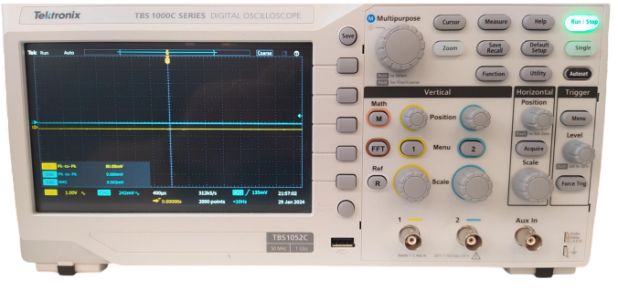
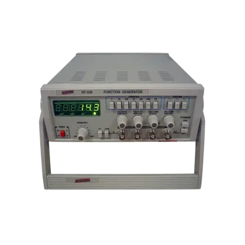

Osciloscópio e Gerador de Funções
1) O que é o Osciloscópio?
O osciloscópio é o equipamento usado para visualizar sinais elétricos em forma de onda.
Ele mostra na tela como a tensão muda com o tempo, permitindo analisar o comportamento real do circuito.
Com ele, podemos ver se o sinal é senoidal, quadrado, se está com ruído, ou se o circuito está funcionando corretamente.

2) Como usar o Osciloscópio
Para usar o osciloscópio corretamente:
- Conecte a ponta da sonda no ponto do circuito que deseja medir.
- Conecte o jacaré de terra da sonda no GND do circuito.
- Escolha o canal desejado (geralmente CH1).
- Ajuste o botão VOLTS/DIV para ver o sinal com boa altura na tela.
- Use TIME/DIV para ajustar o tempo por divisão e ver o sinal completo.
- Gire o botão TRIGGER LEVEL até a forma de onda ficar parada e estável na tela.
3) Principais Botões do Osciloscópio (TBS1052C)
- CH1 e CH2: Entradas para medir até dois sinais ao mesmo tempo.
- VOLTS/DIV (amarelo e azul): Ajusta a escala vertical — define o valor em volts por divisão.
- POSITION (vertical): Move o sinal para cima ou para baixo na tela.
- TIME/DIV: Controla a escala horizontal — quanto tempo vale cada divisão da tela.
- HORIZONTAL POSITION: Move o sinal para a esquerda ou direita.
- TRIGGER LEVEL: Ajusta o ponto de disparo para estabilizar o sinal.
- RUN/STOP: Congela o sinal na tela para análise.
- CURSOR: Permite medir distâncias verticais (tensão) e horizontais (tempo) entre dois pontos.
- MEASURE: Mede automaticamente valores como frequência, amplitude e período.
- AUTOSET: Configura tudo automaticamente para exibir o sinal de forma rápida.
Esses controles são os mais usados e suficientes para visualizar e analisar qualquer sinal básico em laboratório.
4) Entendendo a Tela do Osciloscópio
A tela é dividida em quadrados chamados divisões.
O eixo vertical representa a tensão (V) e o horizontal representa o tempo (s).
Exemplo: se o ajuste estiver em “2 V/div” e o sinal ocupar 3 divisões, a amplitude é de 6 V.
O mesmo vale para o tempo — se o controle estiver em “1 ms/div” e um ciclo ocupar 4 divisões, o período é 4 ms, e a frequência é 1 / 0,004 = 250 Hz.
5) Osciloscópio Digital
O osciloscópio digital converte o sinal elétrico em números binários usando um conversor A/D.
Isso permite pausar, salvar e analisar o sinal com precisão, além de fazer medições automáticas.
Os modelos digitais também possuem portas USB para salvar imagens ou dados coletados durante os testes.
⚠️ Cuidados Importantes
Nunca conecte o osciloscópio diretamente à rede elétrica (110V ou 220V)!
Isso pode queimar o equipamento e causar choques elétricos.
Sempre meça apenas sinais de baixa tensão e use sondas isoladas quando necessário.
6) O que é o Gerador de Funções
O gerador de funções é o equipamento usado para criar sinais elétricos de teste.
Ele envia ondas senoidais, quadradas ou triangulares para testar circuitos e ver suas respostas no osciloscópio.

7) Botões do Gerador de Funções (GF-230)
- WAVEFORM SELECTOR: Escolhe o tipo de onda (senoidal, quadrada ou triangular).
- FREQUENCY: Ajusta a frequência do sinal — quanto mais alto, mais rápido o sinal se repete.
- AMPLITUDE: Controla o tamanho do sinal em volts (a “altura” da onda).
- DC OFFSET: Adiciona uma tensão contínua ao sinal (move a onda para cima ou para baixo).
- OUTPUT: Ativa ou desativa a saída — sem isso o gerador não envia sinal.
- DISPLAY: Mostra a frequência e os ajustes atuais do gerador.
Com esses controles, você pode gerar o sinal ideal para qualquer teste de circuito.
8) Usando os dois juntos
O gerador cria o sinal, e o osciloscópio mostra o que está acontecendo.
Essa dupla é usada para testar, por exemplo, amplificadores, filtros e sensores.
- 1. Ligue a saída do gerador no ponto de entrada do circuito.
- 2. Conecte a sonda do osciloscópio na saída do circuito.
- 3. Ajuste frequência e amplitude do gerador.
- 4. Observe no osciloscópio a forma de onda de saída e compare com a de entrada.
Assim é possível ver se o circuito amplifica, atrasa ou distorce o sinal.
9) Erros Comuns
- Não conectar o terra do osciloscópio ao GND do circuito.
- Usar escalas erradas de tensão ou tempo e não enxergar o sinal na tela.
- Esquecer de ativar o botão OUTPUT no gerador de funções.
- Conectar os cabos invertidos e medir o ponto errado.
- Deixar o TRIGGER mal ajustado e ver a forma de onda “correndo”.
Com atenção a esses detalhes, as medições ficam claras e confiáveis.
10) Conclusão
O osciloscópio e o gerador de funções são ferramentas essenciais na eletrônica.
O gerador cria o sinal e o osciloscópio mostra o que está acontecendo.
Usando os dois corretamente, é possível entender o comportamento dos sinais, testar circuitos e detectar problemas de forma visual e prática.
Voltar para Eletrônica Analógica